เว็บสำหรับหาข้อเสนอต่อรองราคากับผู้ขาย ด้วย EOQ และ Quantity Discount Model ปรับสมมติฐานได้ทุกตัว แล้วเห็นทันทีว่าควรขอราคาเท่าไรที่ล็อตขนาดไหน ต้นทุนรวมต่อปีจึงจะต่ำกว่าข้อเสนอที่ดีที่สุดของร้าน
คู่มือนี้อธิบายทุกส่วนของหน้าจอ ว่าแสดงอะไร เปลี่ยนเมื่อไร หมายความว่าอย่างไร และคำนวณด้วยสูตรใด โดยใช้ข้อมูลตั้งต้นของเว็บ (โจทย์ร้าน Bee Beauty) เป็นตัวอย่างตลอดทั้งเล่ม
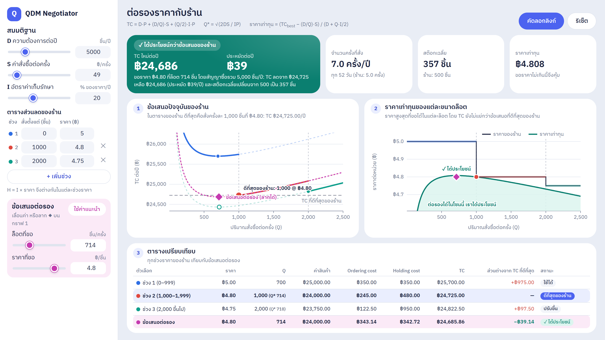
ร้านมักให้ส่วนลดเมื่อสั่งครั้งละมาก ๆ แต่ล็อตใหญ่ทำให้ต้องเก็บสต็อกนานและเสียค่าเก็บรักษา เว็บนี้ตอบว่า
เมื่อเปิดเว็บครั้งแรก หรือกด รีเซ็ต เว็บจะใช้โจทย์ร้าน Bee Beauty นี้
| ค่า | ความหมาย | ค่าตั้งต้น |
|---|---|---|
| D | ความต้องการต่อปี | 5,000 ชิ้น/ปี |
| S | ค่าใช้จ่ายในการสั่งซื้อแต่ละครั้ง | ฿49/ครั้ง |
| I | อัตราค่าเก็บรักษา เป็น % ของราคาต่อปี | 20% |
| ช่วง | สั่งตั้งแต่ | ถึง | ราคา/ชิ้น |
|---|---|---|---|
| 1 | 0 | 999 | ฿5.00 |
| 2 | 1,000 | 1,999 | ฿4.80 |
| 3 | 2,000 | ขึ้นไป | ฿4.75 |
| P | ราคาต่อชิ้น | Q | ขนาดล็อต (ชิ้นต่อครั้ง) |
| H | ค่าเก็บรักษาต่อชิ้นต่อปี = I × P | Q* | EOQ ของราคานั้น |
| TC | ต้นทุนรวมต่อปี | TCbest | TC ต่ำสุดในตารางของร้าน |
| Qn, Pn | ล็อตและราคาที่เราขอ | Pbe | ราคาเท่าทุน |
บนจอคอมพิวเตอร์ที่กว้างตั้งแต่ 1200 px และสูงตั้งแต่ 680 px ทุกส่วนอยู่ในจอเดียว ไม่ต้องเลื่อนหน้า ด้านซ้ายใช้ปรับค่า ด้านขวาแสดงผล ทุกครั้งที่ปรับค่า ผลทั้งหน้าคำนวณใหม่ทันที
ใต้หัวเว็บมีสูตร 3 สูตรที่เว็บใช้: TC, Q* และราคาเท่าทุน (บนจอที่สูงไม่ถึง 860 px สูตรนี้จะถูกซ่อนเพื่อเว้นที่ให้กราฟ)
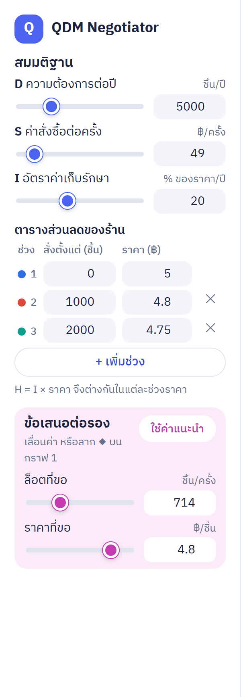
สามค่านี้ใช้กับทุกช่วงราคาและกับข้อเสนอต่อรอง แต่ละค่ามีสองช่องที่ผูกกัน: slider สำหรับลากเร็ว ๆ และช่องตัวเลขสำหรับพิมพ์ค่าที่แน่นอน
| ค่า | หน่วย | ช่วงของ slider | ช่องตัวเลขรับ | ผลเมื่อค่าเพิ่มขึ้น |
|---|---|---|---|---|
| D | ชิ้น/ปี | 100 – 20,000 (ทีละ 50) | ตัวเลขใด ๆ ที่ > 0 | Q* ทุกช่วงใหญ่ขึ้น ค่าสินค้าทั้งปีเพิ่ม |
| S | ฿/ครั้ง | 1 – 500 | ตัวเลขใด ๆ ที่ > 0 | สั่งน้อยครั้งลงจึงคุ้ม Q* ใหญ่ขึ้น |
| I | % ของราคา/ปี | 1 – 50 (ทีละ 0.5) | ตัวเลขใด ๆ ที่ > 0 | เก็บของแพงขึ้น Q* เล็กลง ล็อตใหญ่เสียเปรียบ |
เว็บรับ I เป็นเปอร์เซ็นต์ ไม่ได้รับ H เป็นบาท เพราะค่าเก็บรักษาของสินค้าราคาถูกกว่าก็ถูกกว่าด้วย ข้อความใต้ตารางส่วนลดจึงเตือนว่า H = I × ราคา จึงต่างกันในแต่ละช่วงราคา
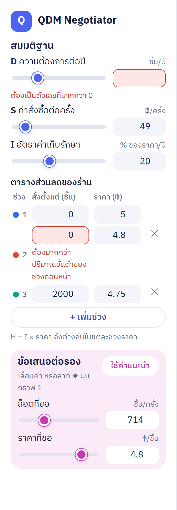
แต่ละแถวคือหนึ่งช่วงราคา กรอก สั่งตั้งแต่ (ชิ้น) และ ราคา (฿) ต่อชิ้น ขอบบนของแต่ละช่วงคำนวณให้เองจากช่วงถัดไป ลบ 1 ช่วงสุดท้ายไม่มีขอบบน
ช่องที่ผิดจะเป็นกรอบแดง พร้อมข้อความบอกวิธีแก้ใต้ช่อง ระหว่างที่ยังมีช่องผิด ผลลัพธ์ กราฟ และตารางจะค้างค่าล่าสุดที่ถูกต้องไว้ ไม่แสดง NaN หรือตัวเลขแปลก ๆ แก้ครบเมื่อไร ทุกอย่างคำนวณใหม่ทันที
| ช่อง | เงื่อนไข | ข้อความที่ขึ้น |
|---|---|---|
| D, S, I, ราคาที่ขอ | ตัวเลขมากกว่า 0 | ต้องเป็นตัวเลขที่มากกว่า 0 |
| ล็อตที่ขอ | จำนวนเต็มตั้งแต่ 1 | ต้องเป็นจำนวนเต็มตั้งแต่ 1 |
| ช่วงแรก สั่งตั้งแต่ | ต้องเป็น 0 | ช่วงแรกต้องเริ่มที่ 0 |
| ช่วงถัดไป สั่งตั้งแต่ | จำนวนเต็ม ≥ 0 | ต้องเป็นจำนวนเต็มไม่ติดลบ |
| มากกว่าช่วงก่อนหน้า | ต้องมากกว่าปริมาณขั้นต่ำของช่วงก่อนหน้า | |
| ราคาในตาราง | ตัวเลขมากกว่า 0 | ต้องเป็นตัวเลขที่มากกว่า 0 |
กล่องสีชมพูในแถบด้านข้างคือข้อเสนอที่เราจะยื่นให้ร้าน สีชมพูม่วงนี้ใช้กับข้อเสนอต่อรองทุกที่ในหน้า: จุด ◆ บนกราฟ เส้นประบนกราฟ 1 และแถวสุดท้ายของตาราง
| ช่อง | ความหมาย | ช่วงของ slider |
|---|---|---|
| ล็อตที่ขอ (Qn) | สั่งครั้งละกี่ชิ้น | 1 ถึงขอบขวาของกราฟ (ยืดตามช่วงสุดท้ายของร้านและล็อตที่ขอ) |
| ราคาที่ขอ (Pn) | ราคาต่อชิ้นที่ขอ | 80% ของราคาต่ำสุดในตาราง ถึงราคาสูงสุดในตาราง |
ค่าแนะนำคือ ขอราคาเท่ากับราคาที่ดีที่สุดของร้าน แต่สั่งที่ EOQ ของราคานั้น แทนที่จะสั่งตามขั้นต่ำของร้าน
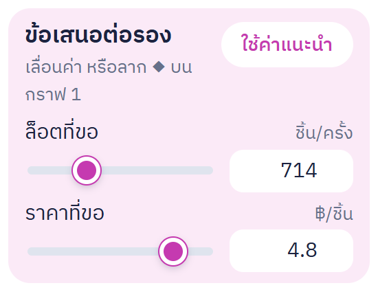
ร้านให้ ฿4.80 ต่อเมื่อสั่งครั้งละอย่างน้อย 1,000 ชิ้น แต่ที่ราคานี้ EOQ คือ 714 ชิ้น การสั่ง 1,000 ชิ้นจึงทำให้ค่าเก็บรักษาสูงเกินจำเป็น ถ้าร้านยอมให้ราคาเดิมที่ล็อต 714 ชิ้น โดยเรายืนยันยอดซื้อรวมทั้งปีเท่าเดิม (5,000 ชิ้น) TC จะลดลง ร้านไม่เสียยอดขาย เราได้สต็อกที่เบาลง
| ร้าน (1,000 ชิ้น) | ขอ (714 ชิ้น) | |
|---|---|---|
| ค่าสินค้า | ฿24,000.00 | ฿24,000.00 |
| ค่าสั่งซื้อ | ฿245.00 | ฿343.14 |
| ค่าเก็บรักษา | ฿480.00 | ฿342.72 |
| TC | ฿24,725.00 | ฿24,685.86 |
แถบผลลัพธ์บอกว่าข้อเสนอต่อรองคุ้มกว่าข้อเสนอที่ดีที่สุดของร้านหรือไม่ การ์ดใหญ่ทางซ้ายเปลี่ยนสีตามผล ถ้าคุ้มเป็นสีเขียว ถ้าแพงกว่าเป็นสีแดงอมส้ม ความสูงของแถบคงที่ เมื่อผลสลับไปมา กราฟด้านล่างจึงไม่ขยับ
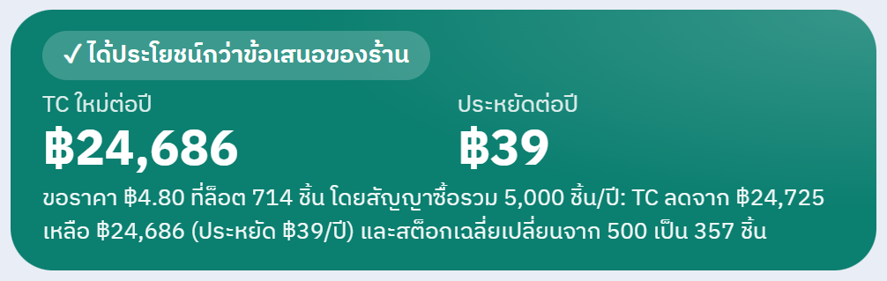
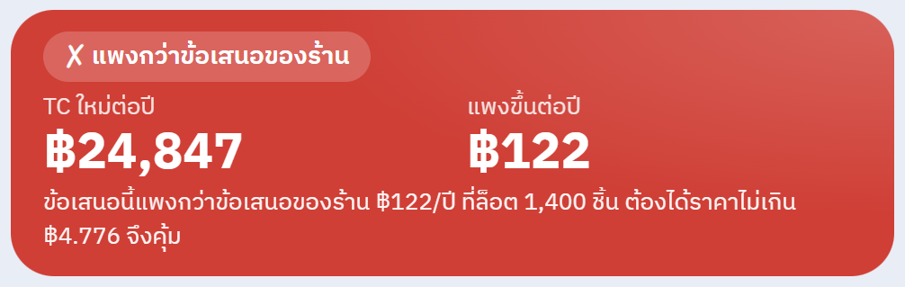
| ช่อง | วิธีคำนวณ | ตัวอย่าง (714 ชิ้น ที่ ฿4.80) |
|---|---|---|
| ป้ายผล | ✓ ได้ประโยชน์ เมื่อ TC ใหม่ ≤ TCbest ไม่อย่างนั้นขึ้น ✗ แพงกว่า | 24,685.86 ≤ 24,725.00 → ✓ ได้ประโยชน์ |
| TC ใหม่ต่อปี | D·Pn + (D/Qn)·S + (Qn/2)·I·Pn ใต้ตัวเลขแสดง TC ของร้านไว้เทียบ | 24,000 + 343.14 + 342.72 = ฿24,686 |
| ประหยัดต่อปี / แพงขึ้นต่อปี | TCbest − TC ใหม่ ถ้าติดลบ หัวข้อเปลี่ยนเป็น "แพงขึ้นต่อปี" และแสดงเป็นบวก ใต้ตัวเลขเป็น % ของ TCbest | 24,725.00 − 24,685.86 = ฿39 (0.16% ของ TC) |
| สรุป | ประโยคเดียวที่บอกทั้งข้อเสนอ ผล และเงื่อนไข ใช้อ่านให้ร้านฟังได้ | ขอราคา ฿4.80 ที่ล็อต 714 ชิ้น โดยสัญญาซื้อรวม 5,000 ชิ้น/ปี … |
| จำนวนครั้งที่สั่ง | D / Qn ครั้งต่อปี ทุก 365·Qn/D วัน วงเล็บเป็นของร้าน (D / Q ของช่วงที่ดีที่สุด) | 5,000 / 714 = 7.0 ครั้ง/ปี ทุก 52 วัน (ร้าน: 5.0 ครั้ง) |
| สต็อกเฉลี่ย | Qn / 2 เทียบกับ Q / 2 ของร้าน | 714 / 2 = 357 ชิ้น (ร้าน: 500 ชิ้น) |
| ราคาเท่าทุน | ราคาสูงสุดที่ขอได้ที่ล็อต Qn โดย TC ไม่เกิน TCbest (สูตรในหัวข้อ 11) | ฿4.808: ขอ ฿4.80 ได้ เพราะต่ำกว่า ฿4.808 |
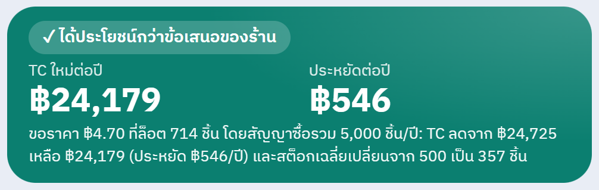
ราคาที่ขอเลื่อนลงได้ถึง 80% ของราคาต่ำสุดในตาราง ราคาที่ต่ำลงทำให้ค่าสินค้าทั้งปีลดลงมาก ยอดประหยัดจึงสูงกว่ากรณีที่ขอแค่ล็อตเล็กลงหลายเท่า
การเลือกราคาที่ร้านจะยอมรับเป็นเรื่องการเจรจา เว็บบอกได้เพียงว่าราคานั้นคุ้มกับเราหรือไม่
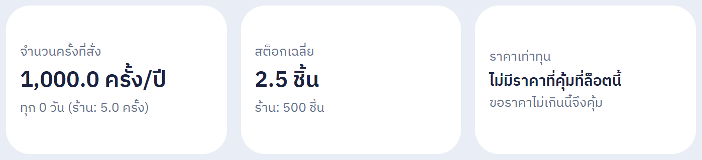
เมื่อล็อตเล็กมาก ต้องสั่งบ่อยจนค่าสั่งซื้อทั้งปีอย่างเดียวก็เกิน TCbest แล้ว ต่อให้ได้ของฟรี TC ก็ยังแพงกว่าร้าน ราคาเท่าทุนจึงติดลบ เว็บจะไม่แสดงราคาติดลบ แต่ขึ้นข้อความนี้แทน
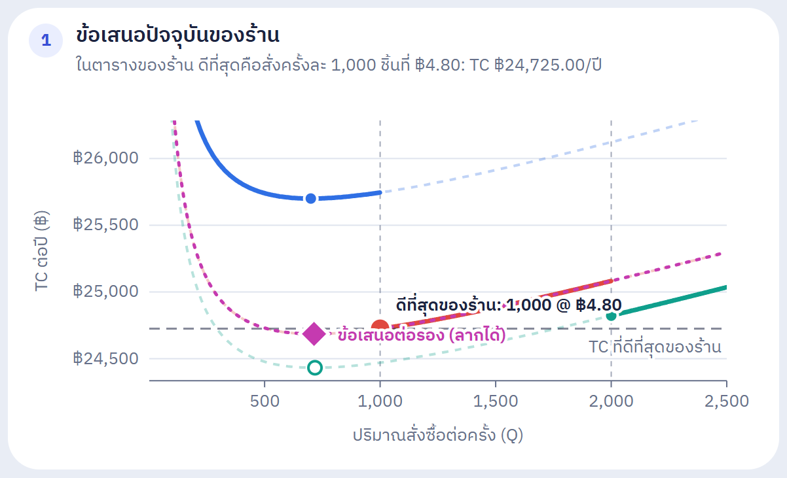
แกนนอนคือขนาดล็อต Q แกนตั้งคือ TC ต่อปี แต่ละเส้นคือ TC ถ้าซื้อที่ราคาของช่วงนั้นด้วยล็อตขนาดต่าง ๆ รูปตัว U มาจากค่าสั่งซื้อที่ลดลงเมื่อล็อตใหญ่ขึ้น บวกค่าเก็บรักษาที่เพิ่มขึ้นตามล็อต ก้นตัว U คือ Q*
หัวการ์ดบอกข้อเสนอที่ดีที่สุดของร้านเป็นประโยค เช่น "ดีที่สุดคือสั่งครั้งละ 1,000 ชิ้นที่ ฿4.80: TC ฿24,725.00/ปี"
| สิ่งที่เห็น | ความหมาย |
|---|---|
| เส้นทึบสีของช่วง | TC ของช่วงนั้น ในช่วงล็อตที่ร้านให้ราคานี้จริง |
| เส้นประจาง | เส้นเดียวกัน แต่อยู่นอกช่วงล็อตของราคานั้น ซื้อจริงไม่ได้ แสดงไว้ให้เห็นรูปตัว U ทั้งเส้น |
| จุดทึบ | ล็อตที่ใช้คิด TC ของช่วงนั้น |
| จุดทึบใหญ่ + ป้าย | ข้อเสนอที่ดีที่สุดของร้าน เช่น "ดีที่สุดของร้าน: 1,000 @ ฿4.80" |
| วงกลมกลวง | Q* ที่ซื้อจริงไม่ได้ เพราะอยู่นอกช่วงล็อต จึงต้องเลื่อนไปขอบของช่วง |
| เส้นประแนวนอน | "TC ที่ดีที่สุดของร้าน" (TCbest) ข้อเสนอที่อยู่ต่ำกว่าเส้นนี้คือคุ้ม |
| เส้นประแนวตั้ง | จุดเปลี่ยนช่วงราคา (1,000 และ 2,000 ชิ้น) |
| เส้นจุดสีชมพูม่วง | TC ที่ราคาที่ขอ ทุกขนาดล็อต เลื่อนราคาที่ขอลง เส้นจะลงทั้งเส้น |
| จุด ◆ "ข้อเสนอต่อรอง (ลากได้)" | ข้อเสนอที่ล็อตที่ขอ อยู่บนเส้นจุดสีชมพูม่วงเสมอ ลากซ้ายขวาได้ |
ขอบเขตแกนตั้งคำนวณจากข้อเสนอของร้าน ไม่ได้คำนวณจากข้อเสนอต่อรอง เวลาเลื่อนล็อต จุด ◆ จึงขยับให้เห็นจริง แกนยืดเฉพาะเมื่อ ◆ กำลังจะหลุดกรอบ เช่น ล็อตเล็กมาก
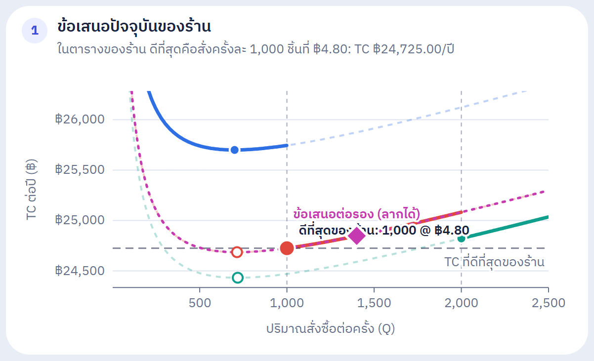
ราคาเท่ากับร้าน แต่ล็อต 1,400 ชิ้นอยู่ไกลจาก Q* (714) ทางขวา ค่าเก็บรักษาจึงสูงจนแพงกว่าร้าน ◆ ลอยอยู่เหนือเส้นประ ต่อให้ล็อตอยู่ในช่วงราคา 1,000–1,999 ก็ไม่ช่วย
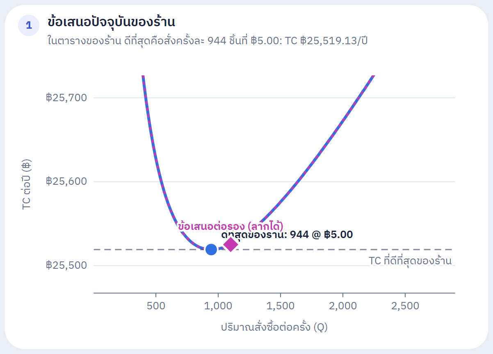
เมื่อร้านมีราคาเดียว ข้อเสนอที่ดีที่สุดของร้านคือ EOQ (944 ชิ้น) ขอราคาเดิมที่ล็อตอื่นจะแพงกว่าเสมอ ◆ จึงอยู่บนตัว U เหนือเส้นประ วิธีเดียวที่จะคุ้มคือขอราคาที่ต่ำกว่า ฿5.00
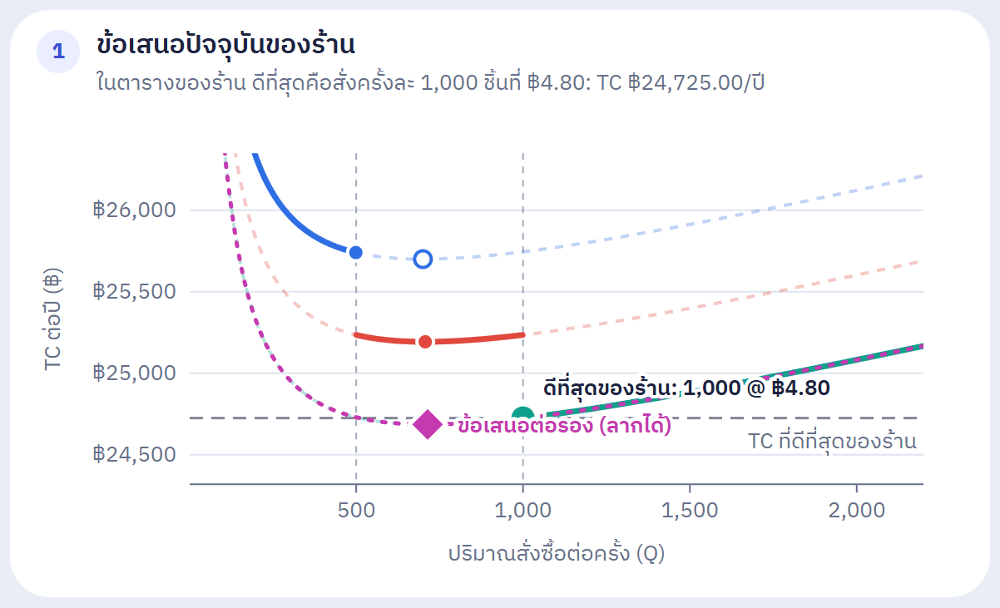
จุดที่ต่ำที่สุดในบรรดาจุดทึบคือข้อเสนอที่ดีที่สุดของร้าน ในตัวอย่างนี้คือช่วง 3 ที่ 1,000 ชิ้น TC ฿24,725
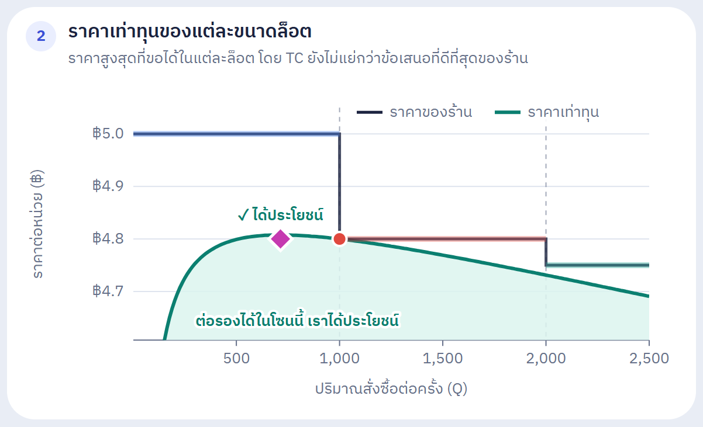
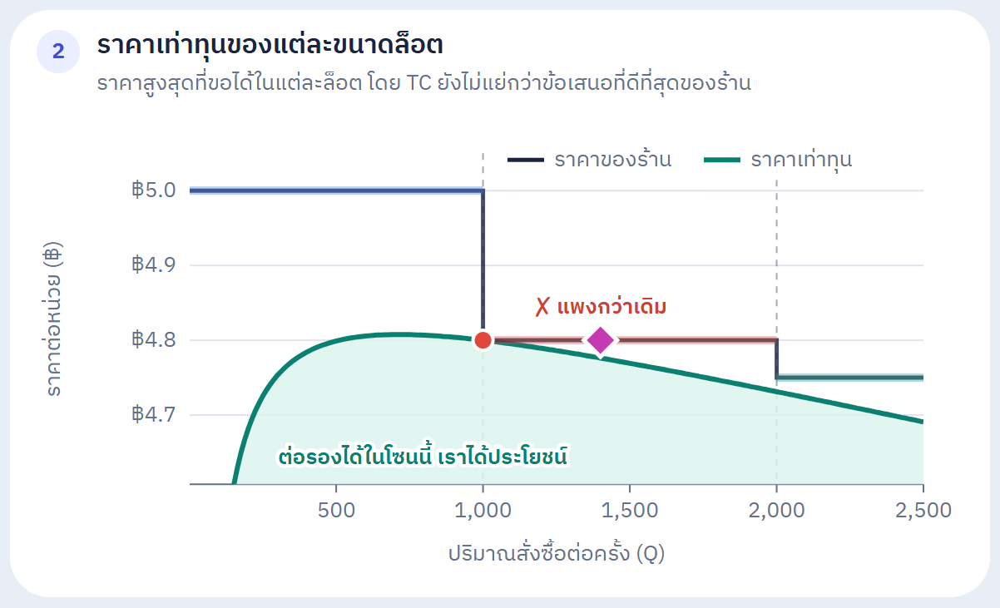
กราฟนี้ตอบว่า "ถ้าจะสั่งครั้งละ Q ชิ้น ต้องได้ราคาไม่เกินเท่าไร จึงไม่แย่กว่าข้อเสนอที่ดีที่สุดของร้าน"
| สิ่งที่เห็น | ความหมาย |
|---|---|
| เส้นขั้นบันได "ราคาของร้าน" | ราคาที่ร้านตั้งไว้ในแต่ละช่วงล็อต แต่ละขั้นมีแถบสีของช่วงนั้น |
| เส้น "ราคาเท่าทุน" | Pbe(Q) ราคาสูงสุดที่ขอได้ที่ล็อต Q |
| พื้นสีเขียว | "ต่อรองได้ในโซนนี้ เราได้ประโยชน์" ทุกจุดใต้เส้นเขียวให้ TC ต่ำกว่าร้าน |
| จุดของร้าน | ข้อเสนอที่ดีที่สุดของร้าน อยู่บนเส้นเขียวพอดี เพราะ TC เท่ากับ TCbest ตามนิยาม |
| ◆ + ป้าย | ข้อเสนอต่อรอง (Qn, Pn) ป้ายบอก ✓ ได้ประโยชน์ หรือ ✗ แพงกว่าเดิม |
ราคาเท่าทุนสูงสุดอยู่ใกล้ Q* ล็อตที่ห่างจาก Q* ไม่ว่าทางซ้ายหรือขวา ต้องได้ราคาต่ำลงเรื่อย ๆ จึงจะคุ้ม เส้นเขียวจึงเป็นรูปโค้งคว่ำ ทางซ้ายสุดเส้นตกลงชันเพราะค่าสั่งซื้อพุ่งขึ้นเมื่อล็อตเล็กมาก
ทุกช่วงราคาของร้านหนึ่งแถว ปิดท้ายด้วยข้อเสนอต่อรอง ทุกช่องคำนวณด้วยสูตร TC เดียวกัน แต่ละแถวจึงเทียบกันได้ตรง ๆ
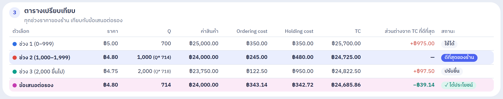
| คอลัมน์ | ความหมายและสูตร |
|---|---|
| ตัวเลือก | ช่วงราคา (จุดสีและช่วงล็อต) หรือ "ข้อเสนอต่อรอง" |
| ราคา | ราคาต่อชิ้นของช่วงนั้น หรือราคาที่ขอ |
| Q | ล็อตที่ใช้คิด ถ้าไม่ใช่ Q* จะมี (Q* …) กำกับ เช่น 1,000 (Q* 714) |
| ค่าสินค้า | D × P |
| Ordering cost | (D / Q) × S |
| Holding cost | (Q / 2) × I × P |
| TC | ผลรวมสามคอลัมน์ก่อนหน้า |
| ส่วนต่างจาก TC ที่ดีที่สุด | TC − TCbest: +฿ สีแดง แพงกว่า, −฿ สีเขียว ถูกกว่า, — คือแถวที่ดีที่สุด |
| สถานะ | ใช้ได้ ปรับขึ้น ปรับลง ดีที่สุดของร้าน และในแถวข้อเสนอ ✓ ได้ประโยชน์ หรือ ✗ แพงกว่าเดิม |
แถวที่ดีที่สุดของร้านเป็นพื้นสีฟ้าอ่อน แถวข้อเสนอต่อรองเป็นพื้นสีชมพูอ่อน ถ้ามีหลายช่วงจนแถวล้นกรอบ ตารางจะเลื่อนดูภายในกรอบได้
เว็บคำนวณ Q* ของทุกช่วง (ปัดเป็นจำนวนเต็ม) แล้วตรวจว่าอยู่ในช่วงล็อตของราคานั้นหรือไม่
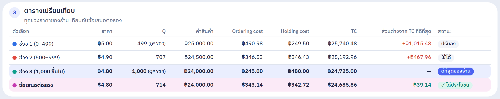
| สถานะ | เกิดเมื่อ | ล็อตที่ใช้คิด TC | ตัวอย่างในภาพ |
|---|---|---|---|
| ใช้ได้ | Q* อยู่ในช่วงล็อตของราคานั้น | Q* | ช่วง 2 (500–999): Q* = 707 → ใช้ 707 |
| ปรับขึ้น | Q* ต่ำกว่าขั้นต่ำของช่วง | ขั้นต่ำของช่วง | ช่วง 3 (1,000 ขึ้นไป): Q* = 714 → ใช้ 1,000 |
| ปรับลง | Q* สูงกว่าขอบบนของช่วง | ขอบบนของช่วง | ช่วง 1 (0–499): Q* = 700 → ใช้ 499 |
ตำรา QDM ทั่วไปจะ ตัดทิ้ง ช่วงที่ Q* เกินขอบบน เพราะสมมติว่าราคาลดลงเมื่อสั่งมากขึ้น ช่วงถัดไปจึงถูกกว่าเสมอ เว็บนี้ใช้วิธีคิด TC ที่ขอบบนแล้วให้ช่วงนั้นแข่งกับช่วงอื่นด้วย
D = 5,000 ชิ้น/ปี, S = ฿49/ครั้ง, I = 20% ตัวเลขทุกตัวด้านล่างตรงกับที่เว็บแสดง
| ช่วง | P | Q* = √(2·5,000·49 / (0.2·P)) | ช่วงล็อต | สถานะ | Q ที่ใช้ | D·P | (D/Q)·S | (Q/2)·I·P | TC |
|---|---|---|---|---|---|---|---|---|---|
| 1 | 5.00 | √(490,000 / 1.00) = 700.0 → 700 | 0–999 | ใช้ได้ | 700 | 25,000.00 | 350.00 | 350.00 | 25,700.00 |
| 2 | 4.80 | √(490,000 / 0.96) = 714.4 → 714 | 1,000–1,999 | ปรับขึ้น | 1,000 | 24,000.00 | 245.00 | 480.00 | 24,725.00 |
| 3 | 4.75 | √(490,000 / 0.95) = 718.2 → 718 | 2,000 ขึ้นไป | ปรับขึ้น | 2,000 | 23,750.00 | 122.50 | 950.00 | 24,822.50 |
TC ต่ำสุดคือช่วง 2 → ข้อเสนอที่ดีที่สุดของร้าน = 1,000 ชิ้นที่ ฿4.80, TCbest = ฿24,725.00
ทุกค่าที่ตั้งไว้ถูกเก็บในที่อยู่เว็บ (ส่วนหลังเครื่องหมาย #) และอัปเดตทุกครั้งที่ปรับค่า ปุ่มนี้คัดลอกที่อยู่ปัจจุบัน ส่งให้คนอื่นเปิดแล้วจะเห็นหน้าเดียวกันทุกตัวเลข ถ้าเบราว์เซอร์ไม่อนุญาตให้เข้าถึง clipboard ปุ่มจะขึ้น "คัดลอกไม่ได้" ให้คัดลอกจากแถบที่อยู่เองแทน
กลับไปใช้ข้อมูลตั้งต้น (Bee Beauty) ทุกช่อง รวมถึงตารางส่วนลด และล้างข้อเสนอที่ตรึงไว้ กลับเป็นค่าแนะนำ
| ส่วนในลิงก์ | ค่า | ตัวอย่าง |
|---|---|---|
d | D | d=5000 |
s | S | s=49 |
i | I เป็น % | i=20 |
t | ตาราง สั่งตั้งแต่:ราคา คั่นด้วย , | t=0:5,1000:4.8,2000:4.75 |
q, p | ล็อตและราคาที่ขอ (มีเมื่อปรับเอง) | q=714&p=4.8 |
ตัวอย่างลิงก์ของข้อเสนอ 1,400 ชิ้นที่ ฿4.80:
ถ้าแก้ลิงก์เองแล้วใส่ค่าผิด เช่น d=-5 เว็บจะใช้ค่าตั้งต้นแทนเฉพาะช่องนั้น ส่วนอื่นยังใช้ค่าจากลิงก์
| จอ | รูปแบบ |
|---|---|
| กว้าง ≥ 1200 px และสูง ≥ 680 px | Dashboard จอเดียว ไม่เลื่อนหน้า กราฟสองรูปอยู่คู่กัน แถบด้านข้างและตารางเลื่อนดูภายในกรอบได้ถ้าข้อมูลยาว |
| สูงไม่ถึง 980 px | ซ่อนบรรทัดเล็กใต้ตัวเลขในการ์ดผลลัพธ์หลัก |
| สูง 680–860 px (เช่น 1366×768) | ซ่อนสูตร คำอธิบายรอง และบรรทัดเล็กใต้ตัวชี้วัด ให้กราฟสูงขึ้น |
| แคบกว่า 1200 px หรือเตี้ยกว่า 680 px | เรียงลงล่าง เลื่อนหน้าได้ |
| มือถือ (แคบกว่า 900 px) | คอลัมน์เดียว แถบสมมติฐานอยู่บนสุด ตามด้วยผลลัพธ์ กราฟ และตาราง |
กราฟทั้งสองวาดตามขนาดกรอบจริง ตัวอักษรบนกราฟจึงอ่านได้ทุกขนาดจอ และวาดใหม่เมื่อย่อหรือขยายหน้าต่าง
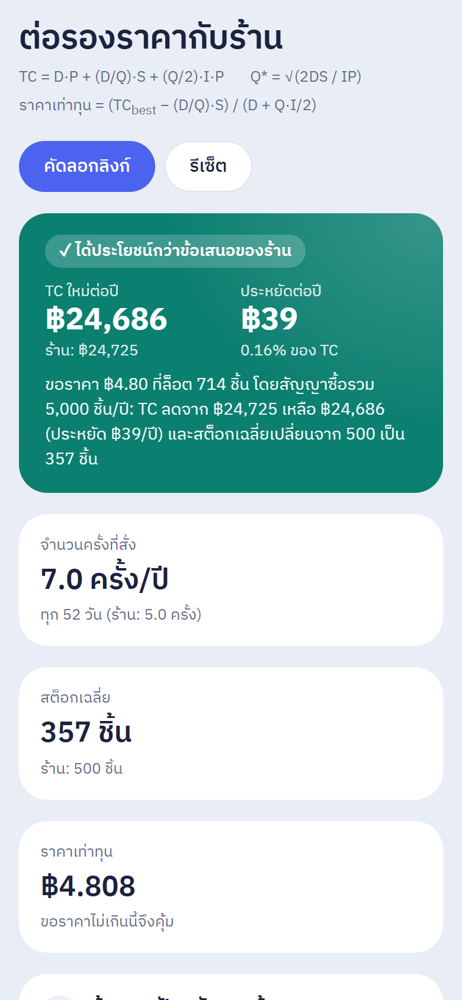
| อาการ | วิธีแก้ |
|---|---|
| ตัวเลขไม่เปลี่ยนเมื่อปรับค่า | หาช่องที่มีกรอบแดง เว็บค้างผลล่าสุดที่ถูกต้องไว้จนกว่าจะแก้ครบ |
| หน้าตาเพี้ยน ส่วนต่าง ๆ ซ้อนกันหลังอัปเดตเว็บ | เบราว์เซอร์ใช้ไฟล์เก่าจาก cache กด Ctrl + F5 |
| เปิดไฟล์ index.html ตรง ๆ แล้วหน้าว่าง | เว็บต้องเปิดผ่าน server ใช้ลิงก์ GitHub Pages หรือรัน python serve.py แล้วเปิด http://localhost:8765 |
| ตัวอักษรไทยเป็นฟอนต์อื่น | ฟอนต์โหลดจาก Google Fonts ถ้าไม่มีอินเทอร์เน็ต เว็บใช้ฟอนต์ของเครื่องแทน การคำนวณไม่เปลี่ยน |
| กด "คัดลอกลิงก์" แล้วขึ้น "คัดลอกไม่ได้" | คัดลอกที่อยู่จากแถบที่อยู่ของเบราว์เซอร์แทน ได้ผลเหมือนกัน |
| อยากให้ข้อเสนอกลับไปเปลี่ยนตาม D, S, I | กด "ใช้ค่าแนะนำ" |
| เพิ่มช่วงไม่ได้ | มีครบ 6 ช่วงแล้ว ลบช่วงที่ไม่ใช้ก่อน |
| แกนตั้งกราฟ 1 กว้างขึ้นมาก | ล็อตที่ขอเล็กหรือใหญ่มากจน TC พุ่งสูง แกนยืดตามเพื่อให้ ◆ ยังอยู่ในกรอบ |